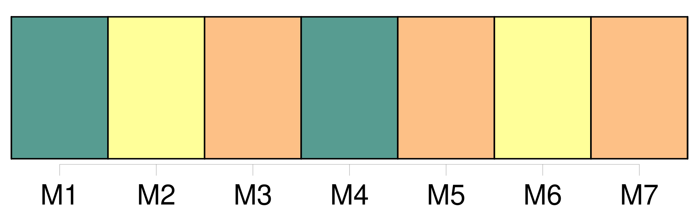

Longueur nb maillons : 9 mentions |
  |
[Mme Kavakci] s'était présentée le 2 mai à la session inaugurale du parlement, pour prêter serment, en portant le foulard islamique.
Le président turc Suleyman Demirel a ratifié un décret du conseil des ministres privant de la nationalité turque [la députée islamiste Merve Kavakci] , [qui] a provoqué un scandale en portant le foulard islamique au parlement. Le Haut comité électoral, chargé des affaires électorales en Turquie, pourrait ensuite retirer le mandat de député de [Mme Kavakci] , [qui] , privée de la nationalité turque, ne pourra plus sièger au parlement.
Cette décision à l'encontre de [l'élue d'Istanbul du parti islamiste de la Vertu ( Fazilet )] , intervient après que les autorités du bureau de l'émigration de Dallas ( Texas ) eurent indiqué aux autorités turques qu' [elle] avait obtenu la nationalité américaine le 5 mars, un peu plus d'un mois avant les élections législatives du 18 avril en Turquie. [Mme Kavakci] s'était présentée le 2 mai à la session inaugurale du parlement, pour prêter serment, en portant le foulard islamique, un acte sans précédent dans les annales de la République turque laïque. Face au tollé provoqué parmi les députés pro-laïcs, [elle] a dû quitter le parlement sans prêter serment. |
La ressource peut être téléchargée sur la page Ortolang
Si vous avez des questions ou vous voyez des erreurs, merci d'envoyer un mail à silvia.federzoni89@gmail.com
Site développé par S. Federzoni (contact)